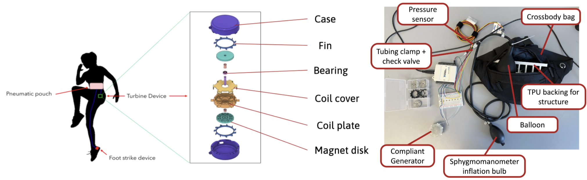
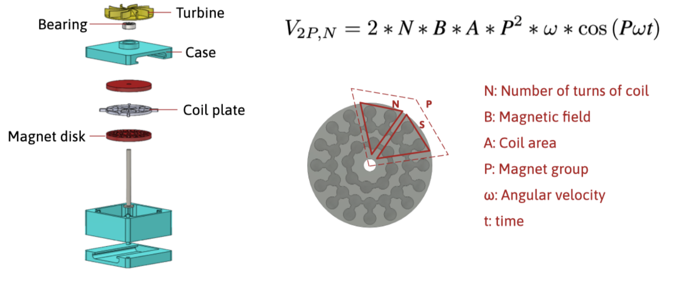
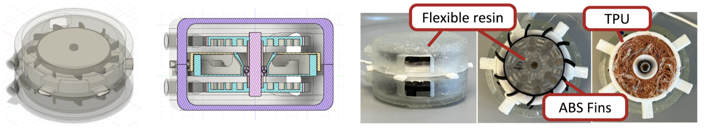

Research
Haptically Transparent Glove for Robot Manipulation Training
I am developing a haptically transparent glove designed for high coverage, compliance, and motion capture, enabling humans to naturally interact with objects while training robotic hands. This project is conducted in collaboration with MIT and Florida A&M University (FAMU).
The goal is to create a glove that can detect and localize contact points during free-space manipulation, allowing us to understand where and how forces occur when grasping objects without impeding the wearer’s tactile perception.
As part of my role, I am conducting a literature review on current tactile sensing mechanisms and motion tracking methods for human hands and grasped objects. My research focuses on:
- Exploring state-of-the-art motion capture systems for both finger and object tracking, including vision-based approaches such as Apple’s EgoDex framework for hand tracking.
- Identifying opportunities to design thin, flexible, and haptically transparent sensor layers that can be integrated onto the glove’s surface.
- Investigating sensing methods that detect contact occurrence (without shear force measurement at this stage) for use in robotic training and teleoperation applications.
Ultimately, the glove aims to bridge human grasp perception and robotic learning by providing a lightweight, high-fidelity sensing interface between human and machine.
Robotics • Manipulation • Embedded • Sensor Fusion
Self‑powered Wearable System
I developed a centimeter-scale permanent-magnet generator featuring a Halbach array to harvest pneumatic energy from human gait and power a microcontroller for haptic sensing and actuation.
Air captured in a soft pneumatic pouch at the waist flows through a controlled valve to drive a miniature turbine, generating electrical current.
The design emphasized compliance and skin comfort, enabling integration into wearable devices for self-powered haptic feedback.
Through iterative testing, the optimized design consistently produced over 3.3 V for more than 7 seconds and maintained above 2 V for over 20 seconds, demonstrating stable and sustained power generation suitable for wearable applications.



Mechanisms • EM • Prototyping • 3D Printing